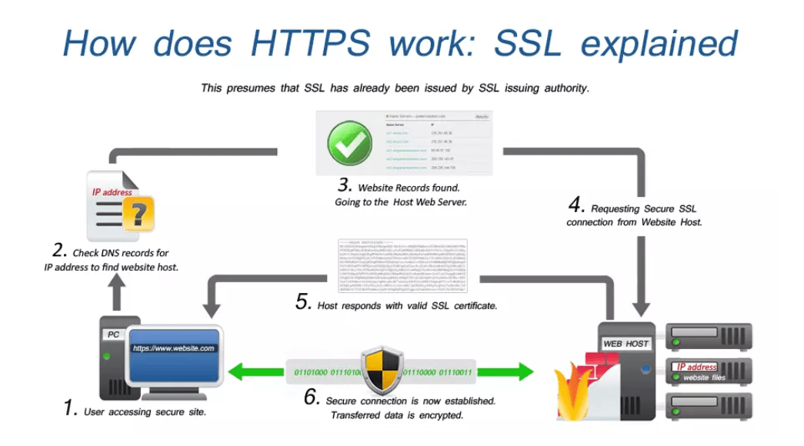
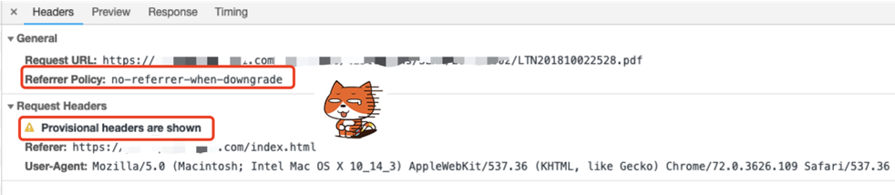
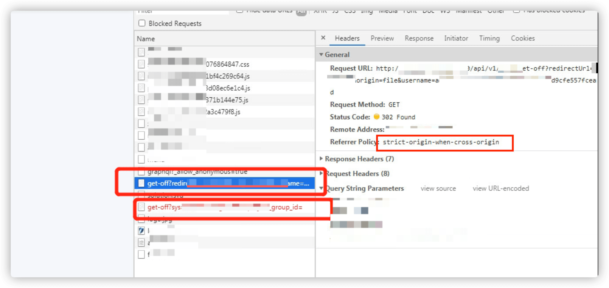
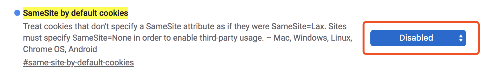

HTTPS在HTTP的基础上增加了SSL/TLS加密，提供了更加安全的传输协议，俨然已经属于各大网站的标配。HTTPS在原有HTTP握手的基础上，增加了证书的验证，进行了加密，解决的问题包括运营商劫持、中间人攻击、钓鱼网站、提升 SEO 等。

1. 同源策略之使用不同的协议
问题起因：两个服务使用的同一域名但不同协议
- 因为公司有一个产品需要在网站内部引入外部文档，提供的是
HTTP的地址。我们测试环境使用的也是HTTP的网址，所以测试不存在问题，可以正常显示外部文档内容。但是更新到正式环境之后，发现原本能够访问的文档不能访问。后来发现我们正式环境使用的是HTTPS的域名，因为浏览器同源策略的问题导致无法访问。

问题经过：配置 Nginx 服务间接使用
- 因为浏览器同源策略的问题，导致在
HTTPS的网站中无法引用HTTP网站的资源。所以，只能配置Nginx使访问的时候，间接的通过代理的方式来访问对应的资源。
server {
listen 443 default ssl;
server_nam xxx.xxx.com;
ssl_certificate "/etc/ssl/certs/xxx.crt";
ssl_trusted_certificate "/etc/ssl/certs/xxx.crt";
ssl_certificate_key "/etc/ssl/private/xxx.key";
......
location /xxx/xxx/ {
proxy_pass_header Server;
proxy_set_header Host $http_host;
proxy_set_header X-Real-IP $remote_addr;
proxy_set_header X-Scheme $scheme;
proxy_set_header Referer "http://www.xxx.xxx";
proxy_http_version 1.1;
proxy_pass http://www.xxx.xxx;
}
}
但是配置之后发现还是无法正常显示引用的外部文档，通过浏览器自带的控制台，发现基本和之前的情况是一样的，还是显示是因为同源策略导致的。后来，通过
curl测试发现，在访问的时候，经过了一次302跳转。很奇怪，为什么还需要跳转呢？通过浏览器自带的控制台，再次对请求进行分析，发现
proxy_pass代理的http://www.xxx.xxx网站302到了http://www3.xxx.xxx上面，这时候才真正的得到了200的文件内容。所以，对Nginx配置进行了调整。将proxy_pass的地址改到了真正的服务域名上面，即可。
location /xxx/xxx/ {
proxy_pass_header Server;
proxy_set_header Host $http_host;
proxy_set_header X-Real-IP $remote_addr;
proxy_set_header X-Scheme $scheme;
proxy_set_header Referer "http://www.xxx.xxx";
proxy_http_version 1.1;
proxy_pass http://www3.xxx.xxx;
}
- 重载配置文件，访问内容，正常了。后来发现是数据库中存储的就是一个假地址，很是尴尬。
2. 同源策略之 Cookie 无法读取
问题起因：两个服务使用的不同域名且不同协议
- 需要部署了两个系统，
A系统和B系统，其中B系统需要通过iframe的方式嵌入到A系统中，通过配置单点登录的方式，使用户通过A系统来使用B系统的服务。但是，等到服务配置完成之后，点击跳转的时候提示401错误。排除了，Token过期和用户没有登录的可能，那就一定是权限哪里配置存在了问题。
问题经过：配置 Nginx 服务间接使用
- 排查问题时发现，在
iframe中确实是正确配置了相关单点登录的跳转地址，且本地直接访问地址是可以通过测试的，但是通过Network发现，紧接着有302跳转了一次，随即提示401权限错误。

- 发现要是
iframe的地址和父级的地址不同源，项目登录时无法设置cookie，则就是因为这个原因导致请求在302跳转之后出现了权限问题(没有把设置的cookie信息带过去)。 - 从
Chrome51开始，浏览器的cookie新增加了一个SameSite属性，用来防止CSRF攻击和用户追踪。该设置当前默认是关闭的，但在Chrome80之后，该功能默认已开启。所以当你无法使用某些网站第三方登录功能的时候，请查看一下是否受到了该设置的影响。
# 接口设置cookie时提示
this set-cookie didnot specify a "sameSite" attribute and was defaulted to "sameSite=Lax" and broke
the same rules specified in the SameSiteLax value
- 解决方法一 打开 Chrome 设置禁用对应配置项，然后重启浏览器。

- 解决方法二 通过在
Nginx中代理相关请求到B系统上，来间接使用并避免同源策略导致的登录异常问题。
location /xxx/xxx/ {
proxy_http_version 1.1;
proxy_pass_header Server;
proxy_set_header Host $http_host;
proxy_set_header X-Real-IP $remote_addr;
proxy_set_header X-Scheme $scheme;
proxy_pass http://www.xxx.xxx;
3. 关于同源策略的相关科普
[1] 什么是同源策略？
- 同源策略
SOP(Same origin policy) 是一种约定，由Netscape公司1995年引入浏览器，它是浏览器最核心也最基本的安全功能，如果缺少了同源策略，浏览器很容易受到XSS、CSFR等攻击。所谓同源是指 “协议+域名+端口” 三者相同，即便两个不同的域名指向同一个IP地址，也非同源。
URL 说明 是否允许通信
http://www.domain.com/a.js
http://www.domain.com/b.js 同一域名，不同文件或路径 允许
http://www.domain.com/lab/c.js
http://www.domain.com:8000/a.js
http://www.domain.com/b.js 同一域名，不同端口 不允许
http://www.domain.com/a.js
https://www.domain.com/b.js 同一域名，不同协议 不允许
http://www.domain.com/a.js
http://192.168.4.12/b.js 域名和域名对应相同ip 不允许
http://www.domain.com/a.js
http://x.domain.com/b.js 主域相同，子域不同 不允许
http://domain.com/c.js
http://www.domain1.com/a.js
http://www.domain2.com/b.js 不同域名 不允许
[2] 同源策略限制那些行为？
Cookie、LocalStorage和IndexDB无法读取DOM和JS对象无法获得AJAX请求不能发送
[3] 跨域解决方案
- 通过
jsonp跨域 document.domain + iframe跨域location.hash + iframewindow.name + iframe跨域postMessage跨域- 跨域资源共享(
CORS) Nginx代理跨域NodeJS中间件代理跨域WebSocket协议跨域
4. 最后陈述总结
比如你有 API 等对外服务，早期开放了 HTTP 调用的接口。那么很遗憾，当我们升级到 HTTPS 的时候，能做的事情是通过公告、邮件等方式告知第三方，我们在特定时间后就不在支持 HTTP 服务，希望第三方支持 HTTPS 调用。或者如果安全性不重要的话，那么就同时支持 HTTP/HTTPS 调用。苹果 HTTPS 的公告 App Transport Security 就是很好的例子，而实际上 App 内部还是留了开启 HTTP 请求的设置。
5. 参考链接记录
送人玫瑰，手有余香！